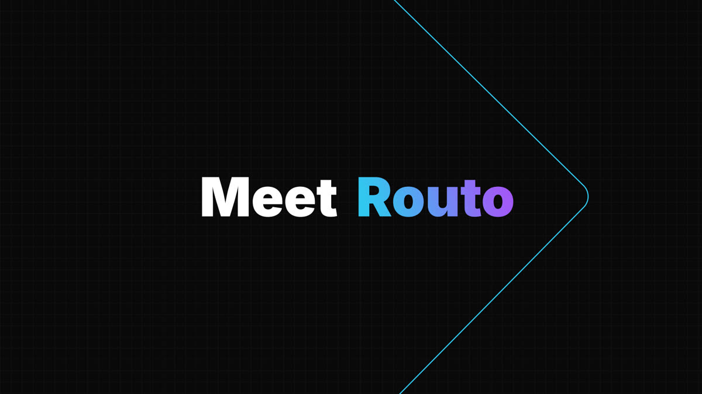
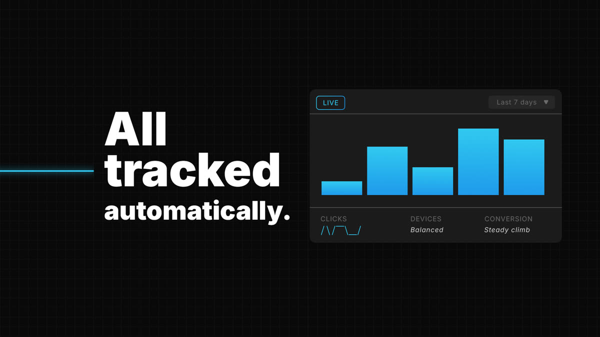
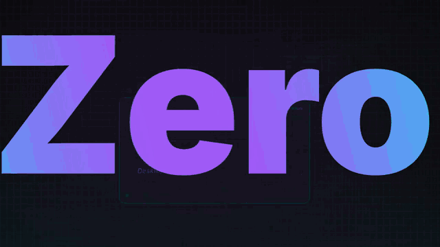

O filme começa pelo problema.
Um SaaS novo tinha uns 30 segundos para explicar o que faz e por que alguém deveria se importar.
O filme abre com uma sensação que todo mundo conhece, o beco sem saída de uma página 404. O produto chega depois, como o alívio.
Foi entregue no prazo, rodou nas redes da Routo.IO no lançamento e voltou a ser usado no pitch para investidores.
Frames selecionados
Quatro cenas do filme.





Do roteiro ao render
Começar pela frustração
Redirecionamentos quebrados e telas erradas ocupam os primeiros segundos. Quem assiste reconhece o problema antes de ouvir falar de qualquer funcionalidade.
Usar o universo da marca
Superfícies escuras de interface, um grid discreto, tipografia forte e azul elétrico vêm do próprio produto da Routo. A imagem vai do claro ao escuro conforme o link é consertado.
Cortar para ficar claro
Cada transição e cada entrada de texto servem a uma frase: um único link que leva cada usuário ao lugar certo.
“A Renata tem um talento único para transformar conceitos em animações envolventes que deixam ideias complexas claras.”